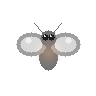
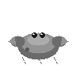
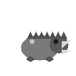
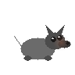

⚠️ 接入约束 为什么独立成表
正式接入清单（另做决策）：① wave_design.json enemies 表增量；② endless.json phases 池增量；③ campaign.html / endless_lab.html 内联敌种数据同步；④ 三方 DATA_SYNC 校验与 README 同步。在此之前本包仅供展示与评估（enemy_pack_demo.html）。
HP 40–85（与现有 30–90 同量纲）、移速 0.7–1.4；每个候选都有「非数值机制」（自爆/减速/格挡/治疗/冲锋/后撤），避免纯数值堆叠。建议接入节奏：阶段 2 引入 2 个、阶段 3 再 2 个、阶段 4 全量——与 endless.json 的四阶段难度曲线（budget/hpMul/dmgMul）叠加后需重跑 sim_balance.py 双档复核。
🐾 候选清单 6 个 · 五元素全覆盖

灰烬蛾
火 · 飞行·自爆HP40
移速×1.15
建议接入：w5+ · w15+
机制：成群直线飞向玩家，接触时自爆造成一次小范围火焰伤害（自身消亡）。
设计意图：数量压制型：靠低血量与自爆制造「必须持续走位」的压力，克制站桩输出。
cand_ember_moth
泡囊蛙 水 · 远程·减速
HP55
移速×0.75
建议接入：w5+ · w10+ · w15+
机制：保持距离吐出泡囊，命中后减速 35%（持续 2.5 秒），冷却 3 秒。
设计意图：走位惩罚型：减速窗口会被其他敌种利用，逼迫玩家优先处理或拉开射程。
cand_bubble_toad

卵石蟹
土 · 装甲·格挡HP85
移速×0.7
建议接入：w10+ · w15+
机制：正面格挡：来自其朝向的伤害 -40%，绕背或用 AOE/DoT 才能高效处理。
设计意图：时间拖延型：高血量与方向性减伤，考验玩家的输出角度与构筑宽度。
cand_pebble_crab

辉光萤
光 · 支援·治疗HP45
移速×0.95
建议接入：w10+ · w15+
机制：为半径内友军持续回复生命（每秒 2 点，最多 3 个目标），自身不攻击。
设计意图：优先级型：不处理就永远清不完——教玩家识别「战场里的支援单位」。
cand_glow_moth

荆刺野豕
木 · 冲锋·撞击HP70
移速×1.4
建议接入：w5+ · w10+ · w15+
机制：蓄力 0.6 秒后直线冲锋，命中造成击退 + 短眩晕（0.4 秒），冲锋后短暂僵直。
设计意图：站桩惩罚型：冲锋可预测、可躲，失误代价高——奖励会看预警的玩家。
cand_thorn_boar

灰烬狼
火 · 游击·撕咬HP60
移速×1.25
建议接入：w10+ · w15+
机制：高速接近—撕咬—后撤循环，命中附加短灼烧（每秒 2 点，2 秒）。
设计意图：失误捕捉型：不持续贴脸，专抓玩家停下来输出的瞬间，与坦克型互补。
cand_ash_wolf